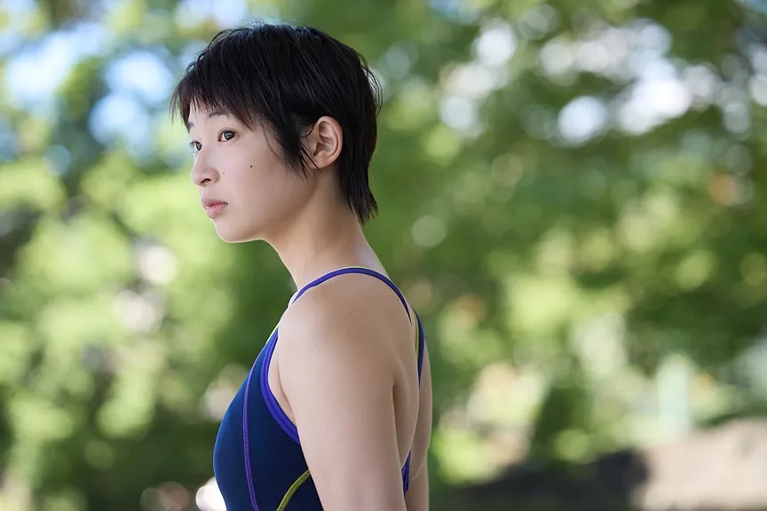

朝比奈葵役
2017年8月の舞台「SUGAR WORKS」でデビュー。
『猿楽町で会いましょう』（21）の主演・ユカ役を好演。
主な出演作に映画『うみべの女の子』（21）、『市子』（23）、
ドラマ「君のことだけ見ていたい」「犬と屑」などがある。
朝比奈葵役を演じました石川瑠華です。
わたし自身、学生時代に映画の中で描かれているような悩みを抱えていました。
そのことを誰にも相談できなかった記憶があります。
当時の自分をしっかり肯定できるようになった今、この映画を今悩んでいる誰かに届けたいと思い、オーディションに参加しました。
役をいただいた時、オーディションを受けた時に考えていたよりも〝わからない〟と感じました。現場でも、安井監督と葵という人物について日々話し合いました。
安井監督はこういう人だと決めつけることはせず、時には少し距離をとって見守ろうとしてくださりました。娘思いだけど不器用なお父さんのようでした。
そんな安井監督の映画だったからこそ、わたしは葵に真っ正面からぶつかるようにして役作りをしていったような気がします。
また、現場では自分よりも若い世代の役者さんが多かったので、いい意味でみんなに染まりたいなと思っていましたし、たくさん支えられていました。
泳ぎの撮影と同じくらい実は水中に身を置いている状態の撮影があり、回数を重ねるごとに息はできないはずなのに、「息をしやすい場所だ」と感じることがありました。
その感覚は、葵を演じる上でとても大切なものだったと思います。
この映画をたくさんの方に観ていただきたいですが、何よりも、今悩みの渦の中にいて息がしにくいと感じている誰かに、この映画がそっと届いてくれたらいいなと思います。